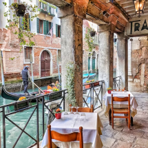
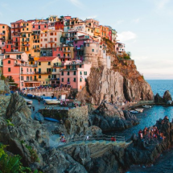
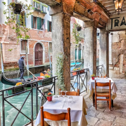
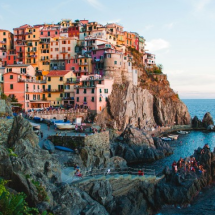
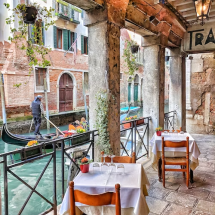
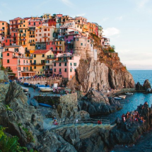

Amante de viagens, cultura e gastronomia. 🌍✈️
Aqui compartilho as histórias registradas em cada clique, explorando cantinhos fascinantes do nosso planeta a partir da movimentada cidade de São Paulo. 🏙️📸

